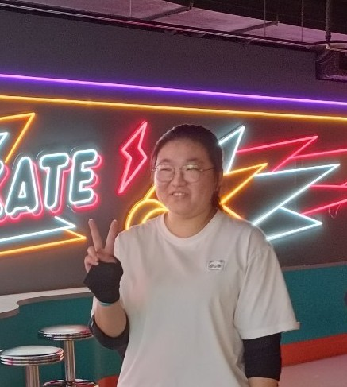

李宥萱
資訊管理系學士
未來想從事的工作
我未來想從事的工作： 資料分析師
原因：
從測驗結果發現自己是屬於IS研究社會型，擅長與人溝通、交流，且資料分析師的工作不僅限於某一領域，可以選擇在不同行業（例如金融、醫療、電子商務、科技等）中發揮我的專業能力，探索不同的挑戰與機會。
工作內容：
負責評估、研究並設計針對新需求或變更的解決方案，並支持應用程式的安裝、配置、測試與調試，以確保MES及其輔助系統的順利運行。開發並維護知識庫、提供必要的培訓與技術支持、制定測試案例、協同IT與開發團隊、監控系統效能並提供分析報告。
如何充實自我：
- 學習 Python、R、SQL、Excel 及 Tableau、Power BI 等數據分析工具。
- 加強統計學與數據科學基礎。
- 熟悉機器學習概念與演算法。
- 取得 Google Data Analytics、Microsoft 或 SAS 等認證。
- 參與實習與專案累積實務經驗。
履歷

未來規劃
我目前計畫在大學畢業之前考取記帳士證照，以及修完 Power BI 課程後取得Google Data Analytics 或 Microsoft Data Analyst Associate 等專業認證，為未來的職涯奠定良好的基礎。
大三下學期時希望能夠決定好繼續升學或是進入企業實習。
長期而言，希望能在科技或電商領域中擔任資深資料分析師，並逐步涉略資料科學與 AI 領域，持續拓展職涯的深度與廣度。